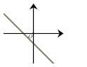
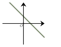
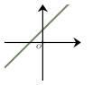
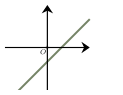

Semaine 2 — Calcul, algèbre et pourcentages
Séance 2 — Calcul, algèbre et pourcentages
Choisir deux nombres puis calculer l’inverse de leur somme.
Le résultat obtenu si on choisit comme nombres $-1$ et $7$ est :
A.
$\dfrac{1}{6}$
B.
$-6$
C.
$-\dfrac{6}{7}$
D.
$-\dfrac{1}{6}$
On donne la relation : $9a+10y=5$.
On cherche à isoler $a$. On a :
A.
$a=-10y+5$
B.
$a=\dfrac{5}{9}-10y$
C.
$a=\dfrac{10y-5}{9}$
D.
$a=\dfrac{-10y+5}{9}$
On considère une fonction affine $f$ telle que $f(4)=-11$ et $f(8)=-19$.
L’image de $12$ par cette fonction affine est :
A.
$-35$
B.
$-24$
C.
$-27$
D.
$-30$
La forme développée de $(3a+2)^2$ est :
A.
$9a^2+12a+4$
B.
$9a^2+6a+4$
C.
$9a^2+4$
D.
$a^2+4a+4$
La seule droite pouvant correspondre à l’équation $y=6x-5$ est :
A.
La droite $D_1$ 
B.
La droite $D_4$ 
C.
La droite $D_2$ 
D.
La droite $D_3$ 
Le prix d’un vêtement est $35$ €.
Il baisse de $20\ $%. Son nouveau prix est :
A.
$34{,}3 $ €
B.
$42 $ €
C.
$34{,}8 $ €
D.
$28$ €
Devoirs — Séance 2 — Calcul, algèbre et pourcentages
Choisir deux nombres puis calculer le double de leur produit.
Le résultat obtenu si on choisit comme nombres $4$ et $2$ est :
A.
$12$
B.
$8$
C.
$16$
On donne la relation : $3x-2c=2$.
On cherche à isoler $x$. On a :
A.
$x=\dfrac{2c+2}{3}$
B.
$x=2c+2$
C.
$x=\dfrac{-2c-2}{3}$
D.
$x=\dfrac{2}{3}+2c$
On considère une fonction affine $f$ telle que $f(5)=2$ et $f(7)=0$.
L’image de $12$ par cette fonction affine est :
A.
$-5$
B.
$2$
C.
$-12$
D.
$-7$
La forme développée de $(2x-9)(2x+9)$ est :
A.
$4x^2-36x+81$
B.
$4x^2+36x+81$
C.
$4x^2-36x-81$
D.
$4x^2-81$
La seule droite pouvant correspondre à l’équation $y=-6x-10$ est :
A.
La droite $D_1$

B.
La droite $D_2$

C.
La droite $D_4$

D.
La droite $D_3$

Le prix d’un vêtement est $50$ €.
Il augmente de $20\ $%. Son nouveau prix est :
A.
$50{,}2 $ €
B.
$40 $ €
C.
$51 $ €
D.
$60$ €